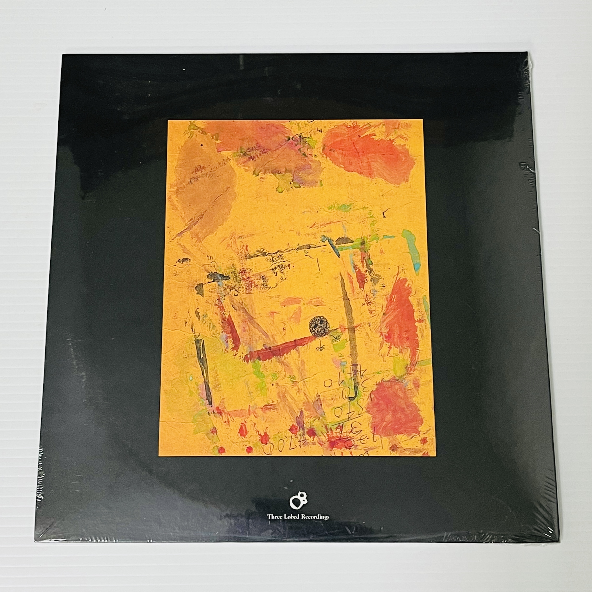

Gene Clark - No Other (2xCD Deluxe Edition)

- 2019 2xCD deluxe edition reissue of Gene Clark's 1974 masterpiece.
- Housed in a hardbound book cover.
- Complete with a 28-page booklet (including some brilliant liner notes and gorgeous promotional photos!).
- The original album remastered at Abbey Road.
- Second disc of session mixes “forensically worked on” by Sid Griffin (the Long Ryders, Western Electric) and John Wood (Nick Drake, Fairport Convention, Sandy Denny).
Track Listing
Extra-Sensory Defection
A1 Scarlet Prism Death Dance
A2 Black Gobi
B Live Crash
Graverobbing in the Future
C Mystery Panhandle
D1 Wanna Go Up See Witches In The Hills? Pt 1
D2 Wanna Go Up See Witches In The Hills? Pt 2
Catalog Number TLR-154
Release Date November 8, 2019
Record Label 4AD
Format 2xCD
The Sun City Girls were unlike any band before them or that has come in their wake. Their catalog, their ethos, their *being* - you name it, with the Girls that “it” was singular and became legend. This singularity started early and extended to their release schedule and the means behind the same. While the band would prove to be wildly prolific throughout their existence, during their nascent days they quickly realized that they could not be contained by any sort of traditional label schedule. Ideas were simply coming to the trio too rapidly to even entertain the notion of being constrained by the possibility of “only” releasing at most two albums a year. To best answer the flood of ideas the name of the game was move fast, record, release and move onto the next concept. This formed the concept and ethos behind the band’s Cloaven Cassette project.
Running from 1987 through 1990, Cloaven Cassettes ultimately covered a staggering twenty-two titles. The releases themselves were as close to the textbook definition of punk as possible – hand dubbed with photocopied covers (sometimes including some crayon or marker to individual a copy) to result in something cheap and ready to sell and gigs and the sort. The recordings that spanned these cassettes was equally punk and brimming over with the signature Girls’ spirit. One title might contain lo-fi deconstructed classic rock covers, another prank phone calls interspersed with free jazz inspired improvisations. The “you never know what you are going to get” spirit that ultimately inspired (and frustrated!) so many was here and on display from an early date.
Over half of these tapes have never been reissued in any fashion or format. Between 2003 and 2009 the late, great Eclipse Records re-released ten of the Cloaven Cassettes over a series of double albums which each represented two of the tapes. Three Lobed Recordings is proud to pick up the baton sixteen years later in an effort to complete chronicling these important and crucial artifacts of the American underground. Remastered from original sources and housed in heavy Stoughton gatefold jackets featuring tons of never-before-seen archival photos, these titles are surfacing in style. Each is from a one-time run of 1000 copies.
The second of these Sun City Girls Cloaven Cassettes releases on Three Lobed pairs “Extra-Sensory Defection” with “Graverobbing in the Future”. For those who have never tracked down horribly sourced mp3 rips of any of these online, get ready for a world full of explorations that immediately drip with that one-of-a-kind Girls sound. A welcome respite in these current days, once again the Sun City Girls are here to the rescue when we least expected them. The past is the future is now.
